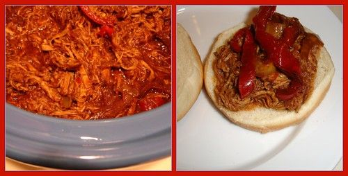

Shredded Pork Sandwiches
Poppa kept 2 versions of this dish.
Follow any recipe, mix and match, or use for inspiration for your own version. That's how Poppa did it.
Pork BBQ Sandwiches

Photo: xiaoyinli (CC BY 2.0)
Directions
- Place pork roast, water and salt in a Dutch oven. Cover and simmer for 3 1/2 to 4 hours or until meat is very tender. Remove meat and discard bone; shred meat with two forks. Skim fat from pan juices. Stir in celery, steak sauce, vinegar, brown sugar, lemon juice, chili sauce, ketchup and shredded pork. Cover and simmer 1 hour. In a large skillet over low heat, saute onions and sugar in oil and butter for 20-30 minutes or until golden brown and tender, stirring occasionally. Serve pork and onions on buns.
- Place pork roast, water and salt in a Dutch oven. Cover and simmer for 3 1/2 to 4 hours or until meat is very tender. Remove meat and discard bone; shred meat with two forks. Skim fat from pan juices. Stir in celery, steak sauce, vinegar, brown sugar, lemon juice, chili sauce, ketchup and shredded pork. Cover and simmer 1 hour. In a large skillet over low heat, saute onions and sugar in oil and butter for 20-30 minutes or until golden brown and tender, stirring occasionally. Serve pork and onions on buns.
Shredded Pork Sandwiches

Photo: Merelymel13 (CC BY-SA 2.0)
Directions
- Place roast in Dutch oven. In bowl combine all ingredients, pour over roast, cover and cook over medium low heat for 4 to 6 hours till tender. Shred meat with forks. Serve on rolls.
- Place roast in Dutch oven. In bowl combine all ingredients, pour over roast, cover and cook over medium low heat for 4 to 6 hours till tender. Shred meat with forks. Serve on rolls.
https://baron-3dl.github.io/normans-kitchen/recipe/pork-bbq-sandwiches.html